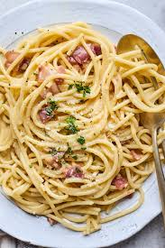

Spagetti Carbornara Recipe

Description
Spagetti Carbornara is a pasta dish made using an egg sauce and crispy pork either bacon or panchetta. A fair amount of parmasean and black pepper is
used.
Ingridinets
- 1lb Spagetti
- 2 Egg Yolks
- 1 Egg White
- Parmasean Cheese
- 1.5lb Bacon
- Salt
- Black Pepper
- Heavy Cream
Instructions
- Slice the pack of bacon into small piecies
- Cook bacon in a skillit on low heat
- Boil water
- Add pasta to boiling water
- While pasta and bacon are cooking crack two whole eggs and 1 egg white into a small bowl
- Add half of the paramasean and add a heafty amount of black pepper to the same bowl as the eggs
- Whisk the bowl untill eggs are beaten and cheese and pepper are properly mixed
- When bacon is little over half way cooked add a 1/4 cup of heavy cream make sure to coat all the bacon this will help get the bacon extra crispy
- Save a cup of the pasta water
- When Pasta is aldente and bacon is finished cooking mix all Ingridinets in a bow and stir quickly
- If pasta gets dry add a little of the saved pasta water
- Salt to taste